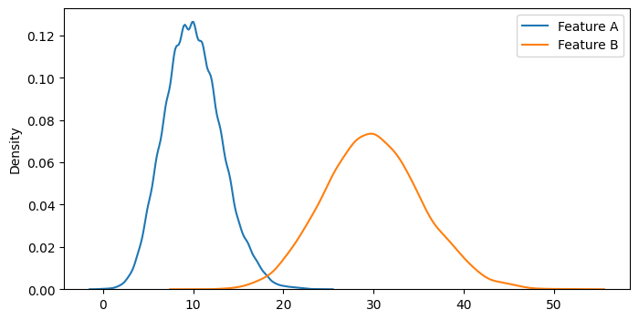
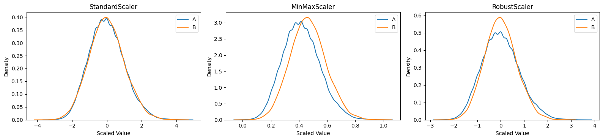
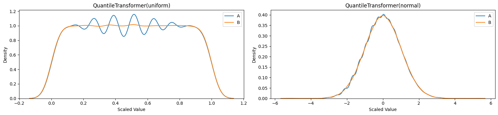
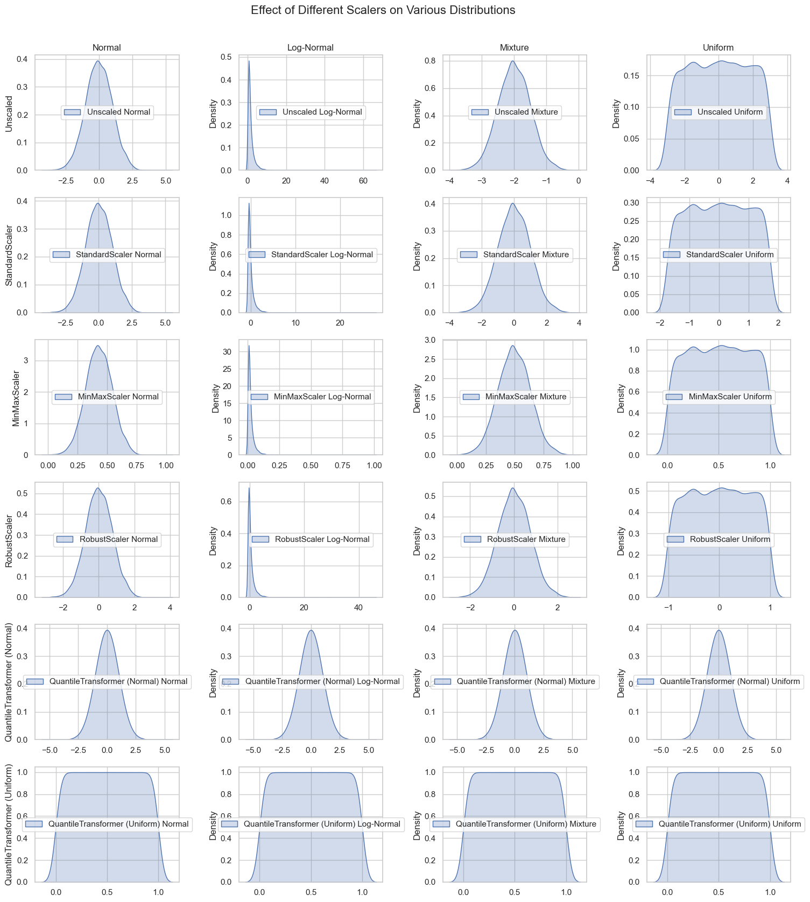

import warnings
import numpy as np
import seaborn as sns
import matplotlib.pyplot as plt
from sklearn.preprocessing import StandardScaler, MinMaxScaler, RobustScaler, QuantileTransformer
warnings.simplefilter(action='ignore', category=FutureWarning)
plt.rcParams['figure.figsize'] = (8, 4)
n_samples = 10000
rng = np.random.default_rng(seed=42)
a = rng.poisson(lam=10, size=n_samples)
b = rng.poisson(lam=30, size=n_samples)
sns.kdeplot(a, label='Feature A')
sns.kdeplot(b, label='Feature B')
plt.legend()
plt.show()

StandardScaler() (Z-score Normalization) removes the mean and scales to the unit variance.
$\( \frac{X_i - X_{Mean}}{X_{StandardDeviation}} \)$
MinMaxScaler() brings all values into the range [0, 1]. Maintains the original distribution and relationships between data points.
$\( \frac{X_i - X_{Min}}{X_{Max} - X_{min}} \)$
RobustScaler() is robust to outliers.
$\( \frac{X_i - X_{Med}}{IQR} \)$
Which to use?
“For most cases, StandardScaler is the scaler of choice. If you know that you have some outliers, go for the RobustScaler.” \(^1\)
Both StandardScaler and MinMaxScaler are very sensitive to the presence of outliers.
fig, axs = plt.subplots(1, 3, figsize=(16, 4))
sns.kdeplot(StandardScaler().fit_transform(a.reshape(-1, 1)).ravel(), ax=axs[0], label='A')
sns.kdeplot(StandardScaler().fit_transform(b.reshape(-1, 1)).ravel(), ax=axs[0], label='B')
axs[0].legend()
axs[0].set_title("StandardScaler")
sns.kdeplot(MinMaxScaler().fit_transform(a.reshape(-1, 1)).ravel(), ax=axs[1], label='A')
sns.kdeplot(MinMaxScaler().fit_transform(b.reshape(-1, 1)).ravel(), ax=axs[1], label='B')
axs[1].legend()
axs[1].set_title("MinMaxScaler")
sns.kdeplot(RobustScaler().fit_transform(a.reshape(-1, 1)).ravel(), ax=axs[2], label='A')
sns.kdeplot(RobustScaler().fit_transform(b.reshape(-1, 1)).ravel(), ax=axs[2], label='B')
axs[2].legend()
axs[2].set_title("RobustScaler")
for ax in axs:
ax.set_xlabel("Scaled Value")
ax.set_ylabel("Density")
plt.tight_layout(rect=[0, 0, 1, 0.95])
plt.show()

QuantileTransformer()
fig, axs = plt.subplots(1, 2, figsize=(16, 4))
sns.kdeplot(QuantileTransformer().fit_transform(a.reshape(-1, 1)).ravel(), ax=axs[0], label='A')
sns.kdeplot(QuantileTransformer().fit_transform(b.reshape(-1, 1)).ravel(), ax=axs[0], label='B')
axs[0].legend()
axs[0].set_title("QuantileTransformer(uniform)")
sns.kdeplot(QuantileTransformer(output_distribution='normal').fit_transform(a.reshape(-1, 1)).ravel(), ax=axs[1], label='A')
sns.kdeplot(QuantileTransformer(output_distribution='normal').fit_transform(b.reshape(-1, 1)).ravel(), ax=axs[1], label='B')
axs[1].legend()
axs[1].set_title("QuantileTransformer(normal)")
for ax in axs:
ax.set_xlabel("Scaled Value")
ax.set_ylabel("Density")
plt.tight_layout(rect=[0, 0, 1, 0.95])
plt.show()

sns.set_theme(style="whitegrid")
distributions = {
"Normal": rng.normal(loc=0, scale=1, size=n_samples),
"Log-Normal": rng.lognormal(mean=0, sigma=1, size=n_samples),
"Mixture": np.concatenate([
rng.normal(loc=-2, scale=0.5, size=n_samples//2),
rng.normal(loc=-2, scale=0.5, size=n_samples//2)
]),
"Uniform": rng.uniform(low=-3, high=3, size=n_samples),
}
scalers = [
("Unscaled", None),
("StandardScaler", StandardScaler()),
("MinMaxScaler", MinMaxScaler()),
("RobustScaler", RobustScaler()),
("QuantileTransformer (Normal)", QuantileTransformer(output_distribution='normal')),
("QuantileTransformer (Uniform)", QuantileTransformer(output_distribution='uniform')),
]
n_rows = len(scalers)
n_cols = len(distributions)
fig, axs = plt.subplots(n_rows, n_cols, figsize=(4 * n_cols, 3 * n_rows))
# Iterate over scalers and distributions to plot
for row_idx, (scaler_name, scaler) in enumerate(scalers):
for col_idx, (dist_name, data) in enumerate(distributions.items()):
ax = axs[row_idx, col_idx] if n_rows > 1 else axs[col_idx]
data = data.reshape(-1, 1)
# Apply scaler if not unscaled
scaled_data = scaler.fit_transform(data) if scaler is not None else data
sns.kdeplot(scaled_data.ravel(), ax=ax, label=f'{scaler_name} {dist_name}', shade=True)
ax.legend(loc='center')
# Set title for the top row
if row_idx == 0:
ax.set_title(dist_name, fontsize=12)
# Set ylabel for the first column
if col_idx == 0:
ax.set_ylabel(scaler_name, fontsize=12)
plt.tight_layout(rect=[0.05, 0.05, 1, 0.95])
plt.suptitle('Effect of Different Scalers on Various Distributions', fontsize=16)
plt.show()
